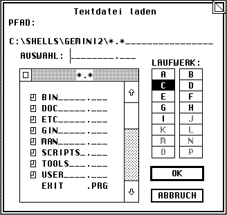

Die Funktionen dieser Bibliothek stellen eine Dateiauswahl zur Verfügung, mit deren Hilfe sich Dateien laden bzw. abspeichern lassen. Für diesen Zweck sind die folgenden Routinen vorhanden:
| • fsel_boxinput | Dateinamen per File-Selektor auswählen (Boxkite) |
| • fsel_exinput | Dateinamen per File-Selektor auswählen |
| • fsel_input | Dateinamen per File-Selektor auswählen |
| • x_fsel_input | Dateinamen per File-Selektor auswählen (Geneva) |
Hinweis: Leider werden alternative Dateisysteme (Stichwort: lange Dateinamen) nicht unterstützt; ab MagiC 4 wird dies jedoch von den Funktionen der FSLX-Library übernommen.
Querverweis: Fileselektoren Style-Guidelines
| Name: | »File Selection Extended Input« - selektiert Dateinamen.
| ||||||||||||||||||||
| AES-Nummer: | 91
| ||||||||||||||||||||
| Deklaration: | int16_t fsel_boxinput ( int16_t *global, int8_t *fs_einpath,
int8_t *fs_einsel, int16_t *fs_eexbutton, int8_t *elabel,
FSEL_CALLBACK callback );
| ||||||||||||||||||||
| Beschreibung: | Die Funktion stellt eine Dateiauswahlbox zur Verfügung, der
auch ein Titel-String übergeben werden kann. Es handelt sich hierbei um
eine erweiterte Version der Dateiauswahl BoxKite.
Der Funktion werden folgende Parameter übergeben:
Hinweis: BoxKite stellt ab Version 2.00 auch die Funktionen der MagiC 4 Dateiauswahl zur Verfügung. Das Vorhandensein dieser Funktionen kann per appl_getinfo (Opcode 7) festgestellt werden. | ||||||||||||||||||||
| Ergebnis: | Der Rückgabewert der Funktion (0 = Fehler) sollte unbedingt
beachtet werden, da z.B. bei Speichermangel kein Fileselektor mehr
benutzt werden kann.
| ||||||||||||||||||||
| Verfügbar: | Wenn der BoxKite ab Version 1.71 installiert ist. Dazu kann der
Cookie HBFS auf des vorhandensein geprüft werden. Allerdings ist
dieser auch schon vor der Version 1.71 vorhanden.
| ||||||||||||||||||||
| Gruppe: | Dateiauswahl
| ||||||||||||||||||||
| Querverweis: | Binding XFS-Konzept in MagiC
|
| C: |
/* Prototyp des Message-Handlers. */ typedef void cdecl (* FSEL_CALLBACK)(int16_t *msg); int16_t fsel_boxinput ( int16_t *global, int8_t *fs_einpath, int8_t *fs_einsel, int16_t *fs_eexbutton, int8_t *elabel, FSEL_CALLBACK callback ); | ||||||||||||||||||||||||||||||||||||
| Umsetzung: |
int16_t fsel_boxinput ( int16_t *global, int8_t *fs_einpath, int8_t *fs_einsel, int16_t *fs_eexbutton, int8_t *elabel, FSEL_CALLBACK callback ) { void *aespb[6], *addrin[6], *addrout[6]; int contrl[5], intin[16], intout[7]; aespb[0] = contrl; aespb[1] = global; aespb[2] = intin; aespb[3] = intout; aespb[4] = addrin; aespb[5] = addrout; contrl[0] = 91; contrl[1] = 0; contrl[2] = 2; contrl[3] = 4; contrl[4] = 0; addr_in[0] = fs_einpath; addr_in[1] = fs_einsel; addr_in[2] = elabel; addr_in[3] = callback; _crystal((AESPB *)aespb); *fs_eexbutton = int_out[1]; return ( int_out[0] ); } | ||||||||||||||||||||||||||||||||||||
| GEM-Arrays: |
|
Achtung BoxKite benötigt Informationen aus dem 'global'-Array der Hauptapplikation. Die mitgelieferten GEM-Bindings von Entwicklungssystemen übergeben dieses normalerweise automatisch.
| Name: | »File Selection Extended Input« - selektiert Dateinamen.
| ||||||||||||||||||
| AES-Nummer: | 91
| ||||||||||||||||||
| Deklaration: | int16_t fsel_exinput ( int8_t *fs_einpath, int8_t *fs_einsel,
int16_t *fs_eexbutton, int8_t *elabel );
| ||||||||||||||||||
| Beschreibung: | Die Funktion stellt eine Dateiauswahlbox zur Verfügung, der
auch ein Titel-String übergeben werden kann.
 Der Funktion werden folgende Parameter übergeben:
Hinweis: Die Funktion sollte mit wind_update (BEG_MCTRL bzw. END_MCTRL) geschachtelt werden, um zu verhindern, daß Doppelklicks an darunter liegende Fenster weitergereicht werden. | ||||||||||||||||||
| Ergebnis: | Der Rückgabewert der Funktion (0 = Fehler) sollte unbedingt
beachtet werden, da z.B. bei Speichermangel kein Fileselektor mehr
benutzt werden kann.
| ||||||||||||||||||
| Verfügbar: | Diese Funktion ist erst ab AES 1.4 verfügbar.
This is also present in FreeGEM. To check for this feature, use appl_init and check that xbuf.arch is nonzero. | ||||||||||||||||||
| Gruppe: | Dateiauswahl
| ||||||||||||||||||
| Querverweis: | Binding fsel_input XFS-Konzept in MagiC
|
| C: | int16_t fsel_exinput ( int8_t *fs_einpath, int8_t *fs_einsel,
int16_t *fs_eexbutton, int8_t *elabel );
| |||||||||||||||||||||||||||||||||
| Umsetzung: |
int16_t fsel_exinput (int8_t *fs_einpath, int8_t *fs_einsel, int16_t *fs_eexbutton, int8_t *elabel) { addr_in[0] = fs_einpath; addr_in[1] = fs_einsel; addr_in[2] = elabel; crys_if (91); *fs_eexbutton = int_out[1]; return ( int_out[0] ); } | |||||||||||||||||||||||||||||||||
| GEM-Arrays: |
|
| Name: | »File Selection Input« - selektiert Dateinamen.
| ||||||||||||||||
| AES-Nummer: | 90
| ||||||||||||||||
| Deklaration: | int16_t fsel_input ( int8_t *fs_iinpath, int8_t *fs_iinsel,
int16_t *fs_iexbutton );
| ||||||||||||||||
| Beschreibung: | Die Funktion stellt eine Dateiauswahlbox zur Verfügung. Es
gilt:
Hinweis: Die Funktion sollte mit wind_update (BEG_MCTRL bzw. END_MCTRL) geschachtelt werden, um zu verhindern, daß Doppelklicks an darunter liegende Fenster weitergereicht werden. In AES-Versionen kleiner als 1.4 können übrigens nur maximal 100 Dateien angezeigt werden; dort wird dann mit einem 'Ping'-Geräusch gewarnt, wenn nicht alle Dateien angezeigt werden konnten. | ||||||||||||||||
| Ergebnis: | Der Rückgabewert der Funktion (0 = Fehler) sollte unbedingt
beachtet werden, da z.B. bei Speichermangel kein Fileselektor mehr
benutzt werden kann.
| ||||||||||||||||
| Verfügbar: | All AES versions, not present in ViewMAX/3, and will crash
ViewMAX/2.
| ||||||||||||||||
| Gruppe: | Dateiauswahl
| ||||||||||||||||
| Querverweis: | Binding fsel_exinput XFS-Konzept in MagiC
|
| C: | int16_t fsel_input ( int8_t *fs_iinpath, int8_t *fs_iinsel,
int16_t *fs_iexbutton );
| ||||||||||||||||||||||||||||||
| Umsetzung: |
int16_t fsel_input (int8_t *fs_iinpath, int8_t *fs_iinsel, int16_t *fs_iexbutton) { addr_in[0] = fs_iinpath; addr_in[1] = fs_iinsel; crys_if (90); *fs_iexbutton = int_out[1]; return ( int_out[0] ); } | ||||||||||||||||||||||||||||||
| GEM-Arrays: |
|
| Name: | »Extended file selector«
| ||||||||||||||||||||||
| AES-Nummer: | 28960
| ||||||||||||||||||||||
| Deklaration: | int16_t x_fsel_input( int8_t *inpath, int16_t pathlen, int8_t
*files, int16_t sels, int16_t *exbutton, int8_t *label );
| ||||||||||||||||||||||
| Beschreibung: |
This function is similar to fsel_exinput, but has several extensions:
| ||||||||||||||||||||||
| Ergebnis: | 0 = Ein Fehler ist aufgetreten.
| ||||||||||||||||||||||
| Verfügbar: | Die Funktion steht nur unter Geneva zur Verfügung.
| ||||||||||||||||||||||
| Gruppe: | Dateiauswahl
| ||||||||||||||||||||||
| Querverweis: | Binding
|
| C: | int16_t x_fsel_input( int8_t *inpath, int16_t pathlen, int8_t
*files, int16_t sels, int16_t *exbutton, int8_t *label );
| |||||||||||||||||||||||||||||||||||||||
| Umsetzung: |
int16_t x_fsel_input( int8_t *inpath, int16_t pathlen, int8_t *files, int16_t sels, int16_t *exbutton, int8_t *label ) { int_in[0] = pathlen; int_in[1] = sels; addr_in[0] = inpath; addr_in[1] = files; addr_in[2] = label; crys_if(28960); *exbutton = int_out[1]; return ( int_out[0] ); } | |||||||||||||||||||||||||||||||||||||||
| GEM-Arrays: |
|